I’m Carina. I direct AI agents, and I send their work back until it’s right.Je suis Carina. Je dirige des agents IA, et je leur fais refaire jusqu’à ce que ce soit bien.
An AI agent is an AI (here Claude Code) that I give a task to, and that writes the code on its own. About twenty of them work on my projects, with automatic checks that catch mistakes, and nothing goes in until I say yes. Self-taught. Before: IT sales, and a year of game design school.Un agent IA, c’est une IA (ici Claude Code) à qui je confie une tâche et qui écrit le code toute seule. Une vingtaine travaillent sur mes projets, avec des contrôles automatiques qui attrapent les erreurs, et rien n’entre sans mon oui. Autodidacte. Avant : la vente informatique, et un an d’école de game design.
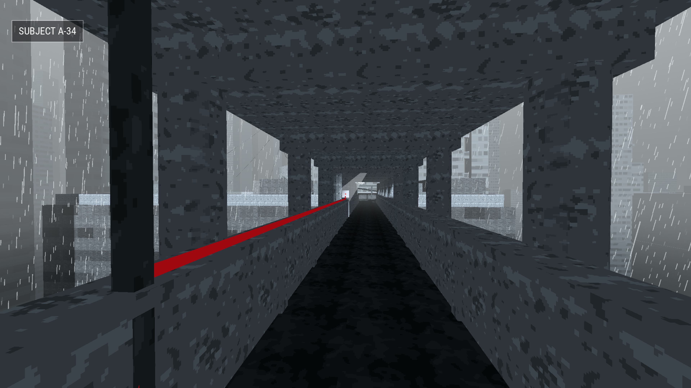
my game demo, in productionma démo de jeu, en productionMy agents show me each attempt on a screen, and I answer yes or no, with my reason. Here are three of my real answers, word for word.Mes agents me montrent chaque essai sur un écran, et je réponds oui ou non, avec ma raison. Voici trois de mes vraies réponses, mot pour mot.
« nonononononononon »
“nonononono…”: my whole verdict on an agent’s TikTok drafttout mon verdict sur un brouillon de TikTok d’un agent
« ON CONSTRUIT AUTOUR DU SON, PAS L’INVERSE »
“We build around the sound, not the other way round.”aux agents, pour une vidéo
« OUIII BRAVOOO <3 »
“YESSS BRAVOOO <3”: version 10, the one that got postedversion 10, celle qui a été publiée
Simple office automations, in an afternoon.Des automatisations de bureau simples, en une après-midi.
Sorting e-mails, an automatic report, connecting two tools. A real example, built for myself: every morning an agent finds job offers, scores them, and drafts a CV and a cover letter tailored to each one, then notifies my PC and my phone.Trier des e-mails, un rapport automatique, relier deux outils. Un exemple réel, fait pour moi : chaque matin, un agent trouve des offres d’emploi, les note, et me prépare un CV et une lettre adaptés à chacune, puis me prévient sur mon PC et mon téléphone.
A kids’ game made with my agents in 19 days, its prices checked by 62 small test programs before any player saw them.Un jeu pour enfants fait avec mes agents en 19 jours, ses prix vérifiés par 62 petits programmes avant qu’un joueur les voie.
The problemLe problème
A collect-them-all game for 7 to 12 year-olds. The economy had to stay fair and fun, with no paid randomness and clear prices.Un jeu à collectionner pour les 7-12 ans. L’économie devait rester juste et amusante, sans hasard payant et avec des prix clairs.
What I builtCe que j’ai construit
22 design documents first, then about 46,000 lines of code in Luau (Roblox’s language), written by the agents under my direction.D’abord 22 documents de conception, puis environ 46 000 lignes de code en Luau (le langage de Roblox), écrites par les agents sous ma direction.
How I checked itComment je l’ai vérifié
62 small Python programs replay egg prices, daily rewards and progression before any number goes into the game. Every change passes six automatic checks before it goes in (below).62 petits programmes Python rejouent les prix des œufs, les récompenses du jour et la progression avant qu’un chiffre entre dans le jeu. Chaque changement passe six contrôles automatiques avant d’entrer (en bas).
My partMa part
I set the rules of a fair game for children: no paid randomness, clear prices. Each build came to me as a screenshot, and I answered OK or Refuse, with the reason. A real one, on a slime: « non, les yeux sont encore ratés, trop “plats” et générés »
(“no, the eyes are still off, too flat and generated-looking”).J’ai posé les règles d’un jeu juste pour des enfants : pas de hasard payant, des prix clairs. Chaque version m’arrivait en capture, et je répondais OK ou Refuser, avec la raison. Un vrai refus, sur un slime : « non, les yeux sont encore ratés, trop “plats” et générés »
.

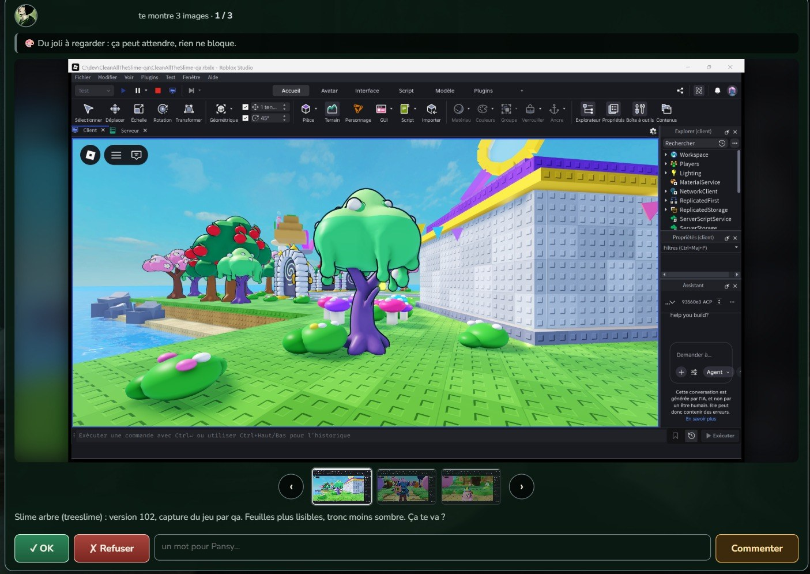

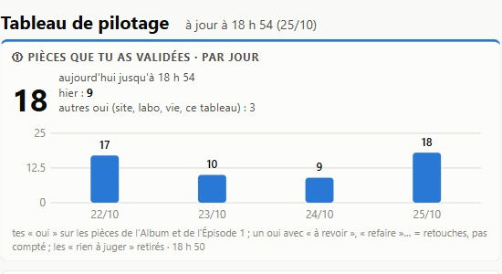
About 20 AI agents build my projects. Nothing goes in until it passes the checks and I say yes.Une vingtaine d’agents IA construisent mes projets. Rien n’entre sans passer les contrôles et sans mon oui.
The problemLe problème
I wanted to ship games and videos alone, with the output of a small team, without losing control of the code.Je voulais sortir des jeux et des vidéos seule, avec le rendement d’une petite équipe, sans perdre le contrôle du code.
What I builtCe que j’ai construit
A conductor program gives each task to a fresh AI agent (Claude Code, an AI that writes code). Each agent has one job: lead, gameplay, interface, testing, review or critique. Each works on its own copy of the project, so no one overwrites anyone. They leave each other messages, and keep working at night within a spending limit.Un programme chef d’orchestre confie chaque tâche à un agent IA neuf (Claude Code, une IA qui écrit du code). Chaque agent a un seul métier : chef, gameplay, interface, tests, relecture ou critique. Chacun travaille sur sa propre copie du projet (une copie git), donc personne n’écrase personne. Ils se laissent des messages, et continuent la nuit avec une limite de dépense.
How I checked itComment je l’ai vérifié
A change only goes in if the automatic tests pass. Anything that matters (an image, a level, a rule) waits in my review room until I say yes or no. A reviewer agent points out risks before I look. Real example: an agent tried to write into my folder of approved reference pictures, and the guard blocked it.Un changement n’entre que si les tests automatiques passent. Tout ce qui compte (une image, un niveau, une règle) attend dans ma salle de validation que je dise oui ou non. Un agent relecteur signale les risques avant que je regarde. Exemple réel : un agent a voulu écrire dans mon dossier d’images de référence approuvées, et la protection l’a bloqué.
My partMa part
I write the rules, split the plan into tasks and judge every result: 172 decisions in 3 days. When the same mistake comes back (« je vais pas le redemander tout le temps quand même :/ »
, “I’m not going to keep asking”), I don’t write one more rule: I add a step the agent can’t skip.J’écris les règles, je découpe le plan en tâches et je juge chaque résultat : 172 décisions en 3 jours. Quand la même erreur revient (« je vais pas le redemander tout le temps quand même :/ »
), je n’ajoute pas une règle de plus : j’ajoute une étape que l’agent ne peut pas sauter.

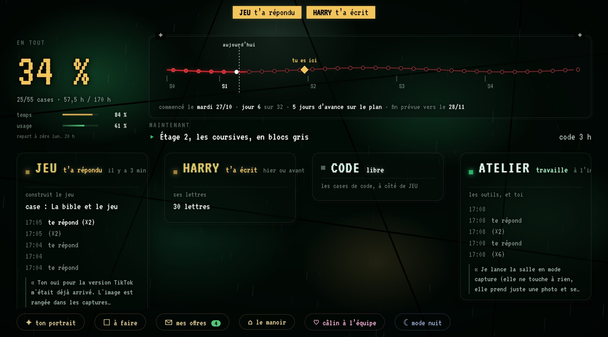
A first-person game demo where no image or 3D model is made by AI, protected by 672 automatic checks.Une démo de jeu à la première personne où aucune image ni aucun modèle 3D n’est fait par une IA, protégée par 672 contrôles automatiques.
The problemLe problème
Make a 20 to 25 minute first-person game alone, fast, in Godot (a game engine) and Blender (3D), without letting the agents invent visuals or touch the reference pictures I picked. My rule: art comes from people or from code I direct, never from an image generator.Faire seule un jeu à la première personne de 20 à 25 minutes, vite, dans Godot (un moteur de jeu) et Blender (la 3D), sans laisser les agents inventer des visuels ni toucher aux images de référence que j’ai choisies. Ma règle : l’art vient de personnes ou de code que je dirige, jamais d’un générateur d’images.
What I builtCe que j’ai construit
A rulebook the agents must follow, and a ready-made procedure for each step. 3D models are built by code in Blender, from references I approved. The whole demo is playable in plain grey blocks before any decoration. It is still in production.Un règlement que les agents doivent suivre, et une procédure toute prête pour chaque étape. Les modèles 3D sont construits par du code dans Blender, d’après des références que j’ai approuvées. Toute la démo est jouable en simples blocs gris avant toute décoration. Elle est encore en production.
How I checked itComment je l’ai vérifié
A guard stops dangerous commands on protected files, and has its own tests. A fingerprint check proves no reference picture was changed. Every image goes through my review room before it is kept.Un garde arrête les commandes dangereuses sur les fichiers protégés, et il a ses propres tests. Une vérification d’empreintes prouve qu’aucune image de référence n’a changé. Chaque image passe par ma salle de validation avant d’être gardée.
My partMa part
I picked every reference, and I judge every visual and every level as a player. On a corridor the agents found finished: « si juste on sprinte sans s’arrêter il y a aucun challenge si ? »
(“if you just sprint without stopping, there’s no challenge, right?”).J’ai choisi chaque référence, et je juge chaque visuel et chaque niveau en joueuse. Sur un couloir que les agents trouvaient fini : « si juste on sprinte sans s’arrêter il y a aucun challenge si ? »
.
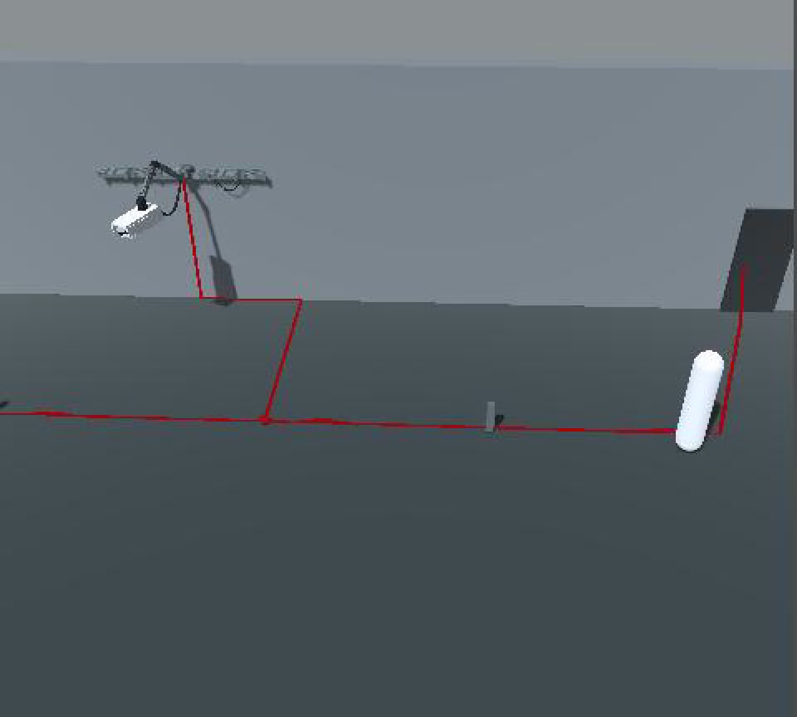
first: grey blocks, playabled’abord : blocs gris, jouableI also draw. That’s how I judge what agents make.Je dessine aussi. C’est comme ça que je juge ce que font les agents.
Seven years of pencil, ink, digital, pixel art and 3D. Every piece is mine, no generated images.Sept ans de crayon, d’encre, de numérique, de pixel art et de 3D. Chaque pièce est de moi, aucune image générée. See all 271 pieces →Voir les 271 pièces →

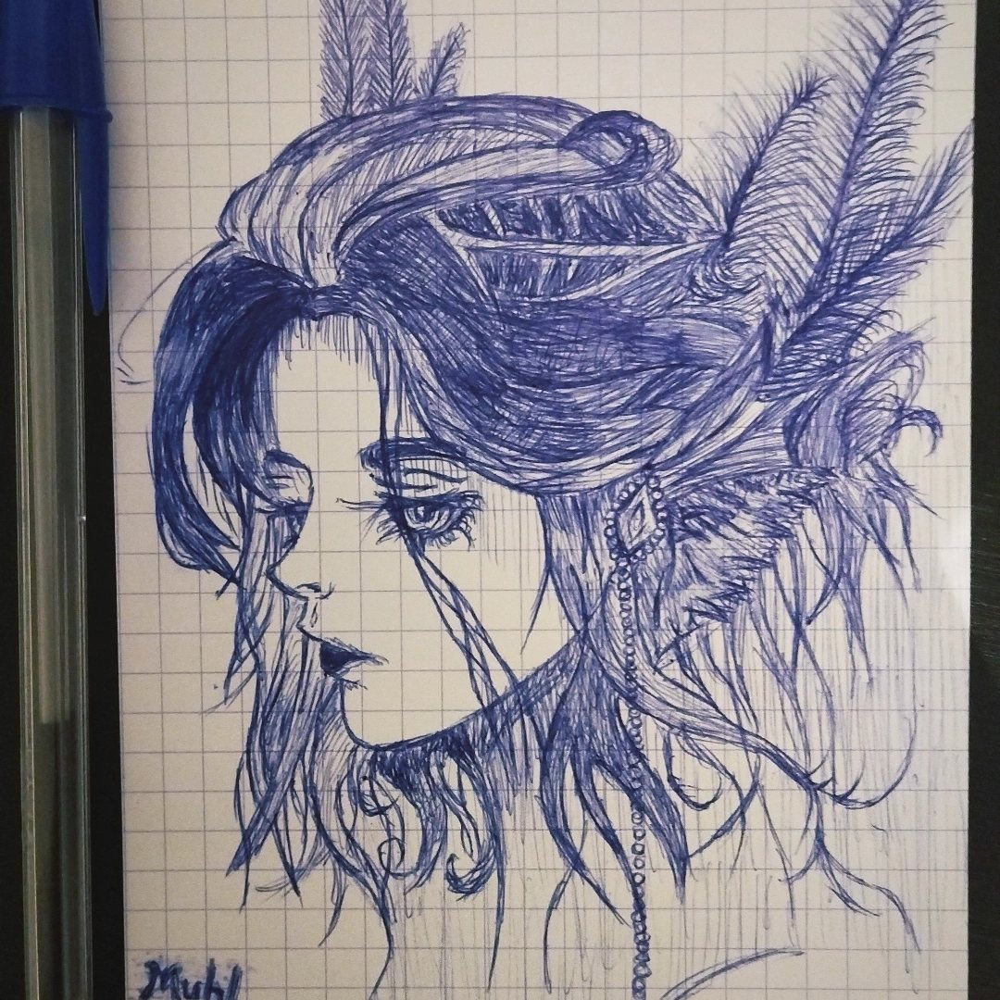

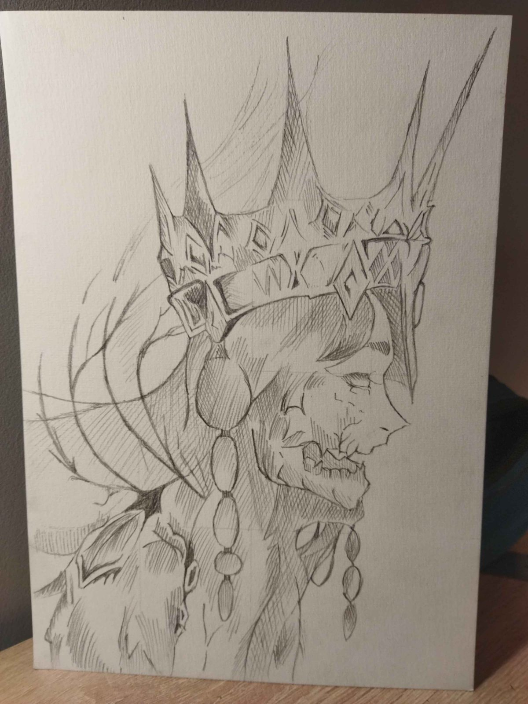

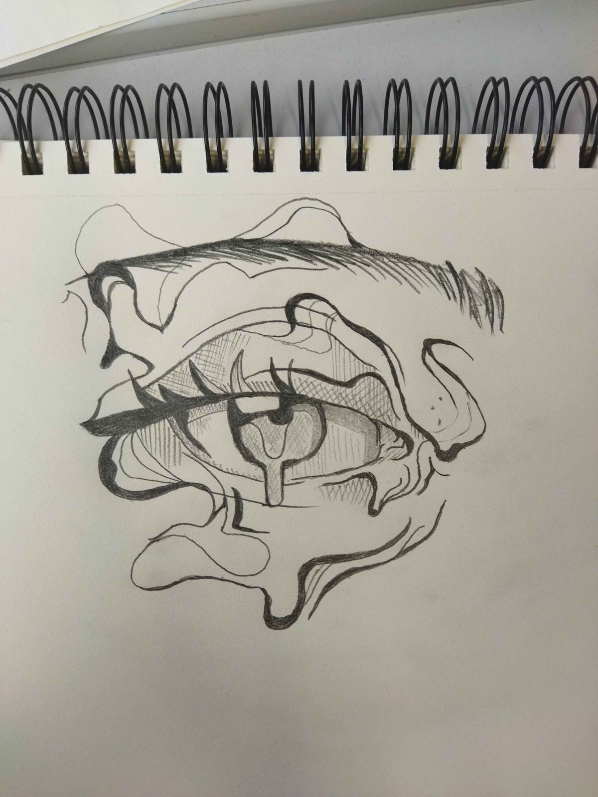

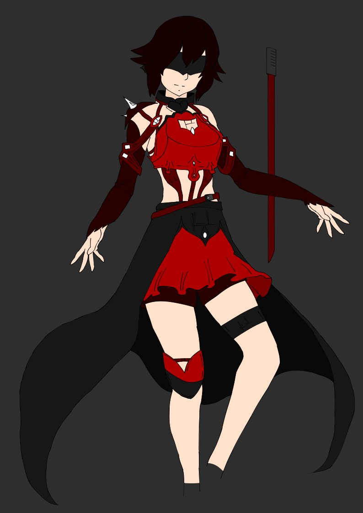

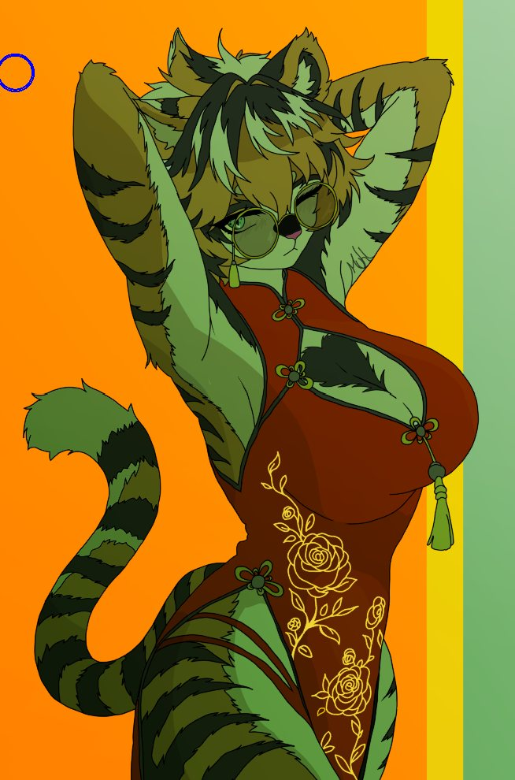

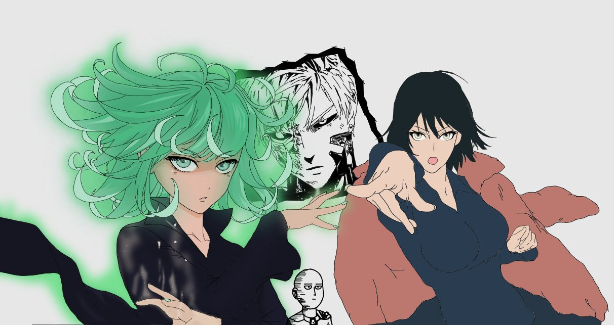

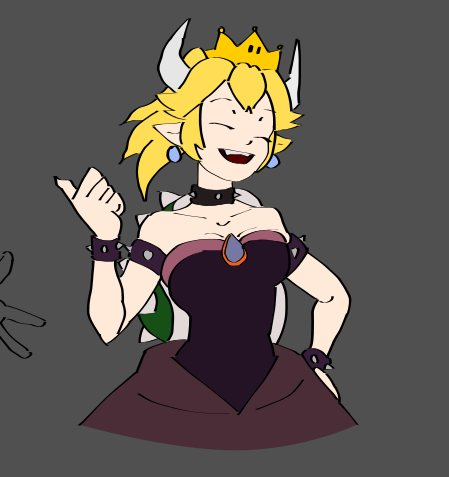

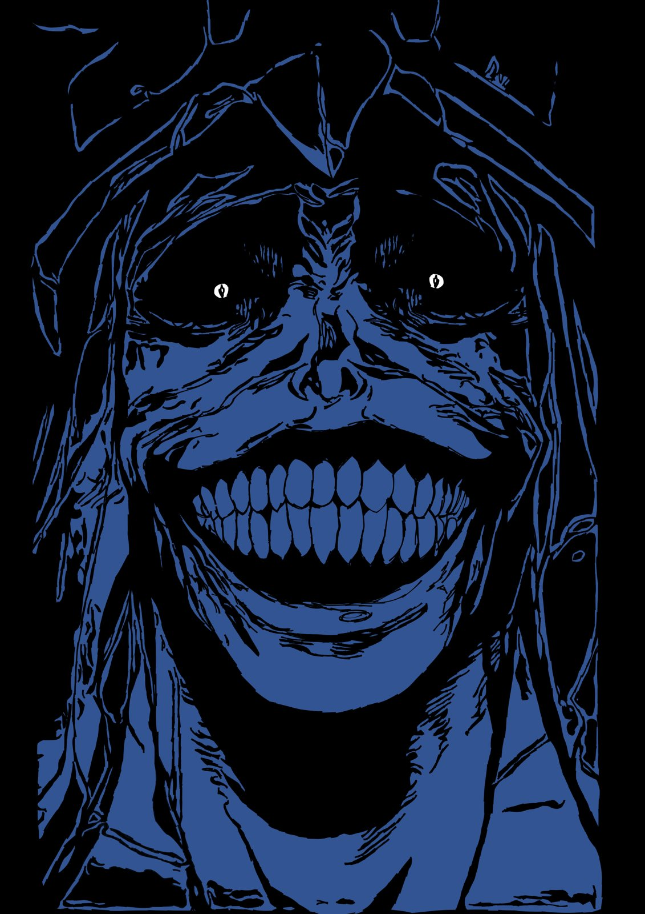

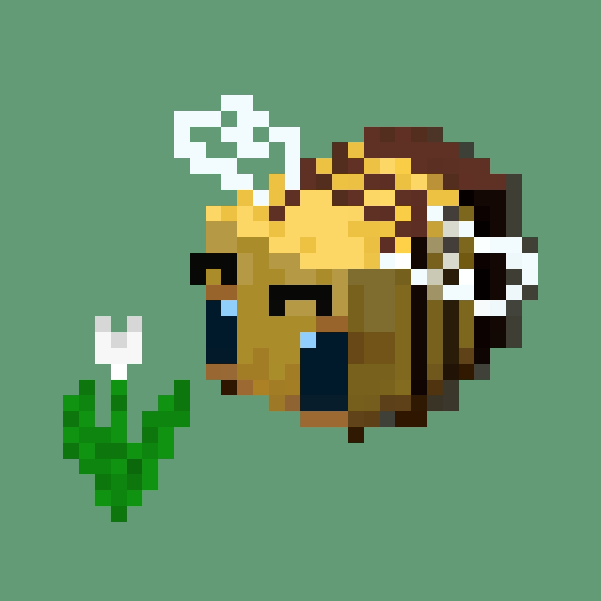

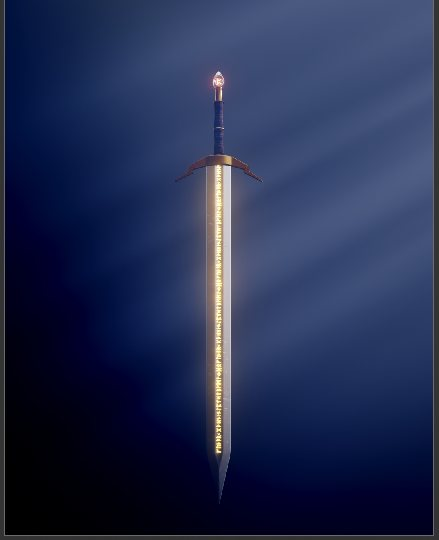

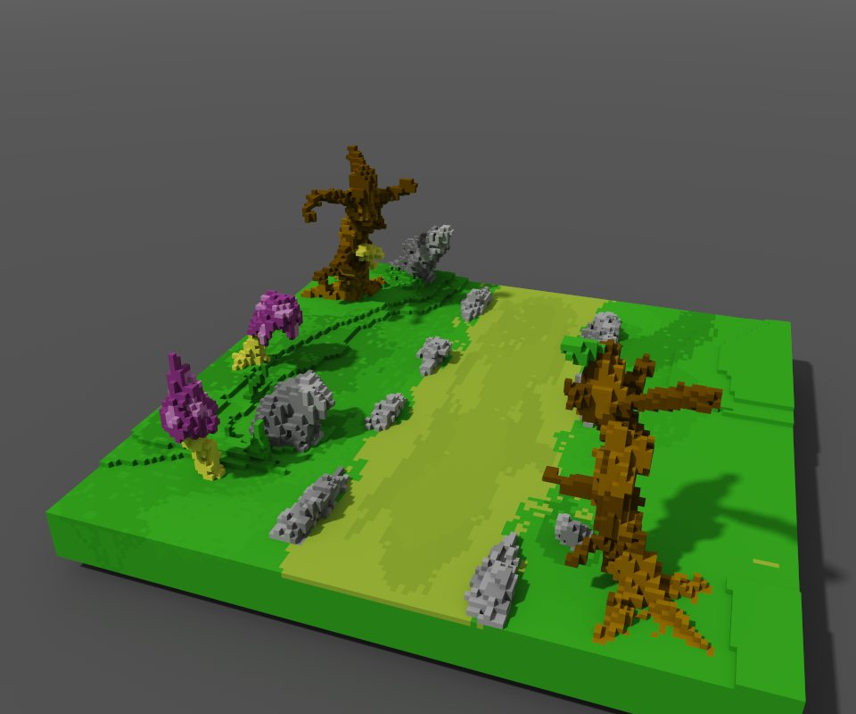

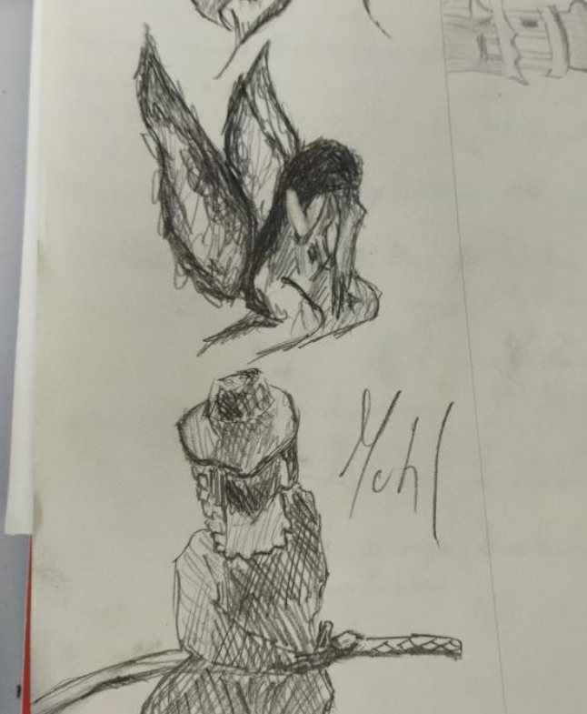
Smaller tools I built for myself.Des outils plus petits, faits pour moi.
- Live dashboardTableau de bord en directWatch several AI agents work at once, with an alert the second one needs me.Voir plusieurs agents IA travailler à la fois, avec une alerte dès que l’un a besoin de moi.
- Safe agent toolingOutils d’agents sûrsA launcher and guards that block risky actions, with 40 tests, and 10 ready-made procedures.Un lanceur et des gardes qui bloquent les actions risquées, avec 40 tests, et 10 procédures toutes prêtes.
- AI chat that remembersUne conversation IA qui se souvientPast conversations summarised into chapters, and replies recovered if they get lost.Les conversations passées résumées en chapitres, et les réponses rattrapées si elles se perdent.
- 3D game, all codeJeu 3D, tout en codeNo imported images, everything drawn by code the agents wrote under my direction, and a bot that plays the game to test it.Aucune image importée : tout est dessiné par du code que les agents ont écrit sous ma direction, et un robot joue au jeu pour le tester.
Self-taught since 13. I learned to build things before agents built them for me.Autodidacte depuis 13 ans. J’ai appris à construire avant que des agents construisent pour moi.
- 2019My first Minecraft server, at 13. About ten more after it.Mon premier serveur Minecraft, à 13 ans. Une dizaine d’autres ensuite.
- 2021ZebiCraft, a Minecraft modpack published on CurseForge. My first own game, in Unity.ZebiCraft, un modpack Minecraft publié sur CurseForge. Mon premier jeu à moi, dans Unity.
- 2022A 3D world map and a 55-hour Unity project for school talks. A 2D RPG with multiplayer I set up myself.Une carte du monde en 3D et un projet Unity de 55 h pour des exposés. Un RPG 2D avec un multijoueur que j’ai mis en place moi-même.
- 2023My first paid commission ($200, pixel art). A platformer, a small Python game, Blender and my first shaders.Ma première commande payée (200 $, pixel art). Un jeu de plateforme, un petit jeu en Python, Blender et mes premiers shaders.
- 2024-25A dive into real life: I left design school after the first year, sorted out problems on my own and kept learning by myself.Un plongeon dans la vraie vie : j’ai quitté l’école de design après la 1re année, réglé des problèmes seule et continué à apprendre par moi-même.
- 2026I direct AI agents, and I still read and fix simple code myself.Je dirige des agents IA, et je lis et corrige toujours du code simple moi-même.
Want to talk?On en parle ?
French (native), English (C1). Before this: IT sales advisor at Chip7, food bank volunteer, first year of a game design bachelor at e-artsup. Based in France, Paris time. Remote, or on site with relocation. Available now.Français natif, anglais C1. Avant : conseillère en vente informatique chez Chip7, bénévole à la banque alimentaire, 1re année de bachelor game design à e-artsup. En France, heure de Paris. À distance, ou sur place avec déménagement. Disponible tout de suite.
This site was built by directing Claude Code: I designed it, split the work, set the rules, and checked every page.Ce site a été fait en dirigeant Claude Code : je l’ai conçu, j’ai découpé le travail, posé les règles et vérifié chaque page.